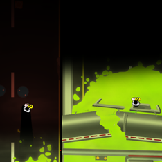

As a designer working in digital media I believe that it is invaluable to be able to write my own code. I find it incredibly handy both in terms of being able to prototype my own ideas, develop projects on my own, and being able to improve the content and design pipelines I work in on a regular basis.
I've been working in flash for about 5 years now and do most of my rapid game prototyping in ActionScript 3. I've been particularly fond of Adam Saltsman's Flixel libraries to augment this work. I've become fairly adept at building out game prototypes in a very short period of time, often two to three days. For an example of my work check out Maru, a project I did on my own in 48 hours for Ludum Dare competition. My code is publicly availible on github and you can view a full timelapse of the game being made:
At Zynga I often find myself writing a lot of helper scripts to streamline the design and content implementation process. This usually takes the form of quick python or bash scripts to handle things like auditing the structure of our XML, building metrics reports, generating large sets of formulas for excel or other needs, implementing large groups of art assets, and doing XML generation on the fly. Of late I've also been building a variety of game prototypes for projects that are in early pitch stages.
In terms of langauges, I spend most of my time in ActionScript 3, C#, Processing, and Python, but I also have some limited experience with, Ruby on Rails, Java, C++. I also spend a lot of time messing with XML, JSON, CSS, and HTML.